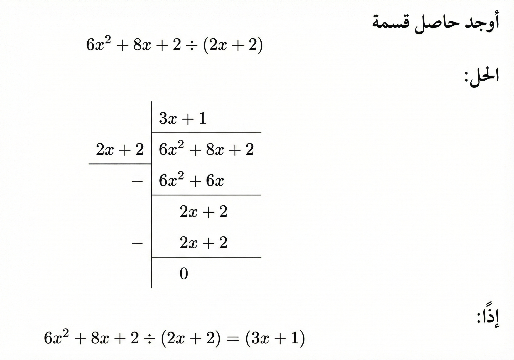

كثيرات الحدود
تتمحور أهداف دراسة كثيرات الحدود حول تمكين المتدرب من الإلمام بالأساسيات الرياضية والمهارات التحليلية اللازمة.
الهدف العام
يهدف هذا القسم إلى إكساب المتدرب المعرفة التامة بكثيرات الحدود والكسور الجبرية وكيفية اختصارها.
الأهداف التفصيلية
يتوقع من المتدرب بعد دراسة هذه الوحدة أن يكون قادراً وبكفاءة على تحقيق الآتي:
- إجراء العمليات الحسابية المختلفة (مثل الجمع، الطرح، والضرب) على كثيرات الحدود.
- تحليل كثيرات الحدود إلى عواملها الأولية.
- حساب الكسور الجبرية واختصارها للوصول إلى أبسط صورة ممكنة.
أهمية كثيرات الحدود
بالإضافة إلى ذلك، تبرز أهمية كثيرات الحدود في المصادر كركيزة أساسية للانتقال إلى موضوعات أكثر تقدماً، حيث تهدف
دراستها إلى إعداد المتدرب لموضوعي التفاضل والتكامل، والتعرف على كيفية إيجاد مشتقات الدوال التي تتخذ شكل كثيرات
حدود.
الوقت المتوقع للتدريب على هذه الوحدة: 8 ساعة تدريبية.
الحد الجبري
نبدأ بتعريف الوحدة الأساسية التي تتكون منها كثيرات الحدود.
الحد الجبري يكون إما ثابتاً أو متغيراً أو حاصل ضرب ثابت في متغير واحد أو أكثر، بشرط أن يكون أس المتغير عدداً صحيحاً غير سالب. يسمى الثابت معامل الحد الجبري، وتكون درجة الحد الجبري هي حاصل جمع أسس المتغيرات فيه.
ما معامل ودرجة الحد الجبري التالي: \[ -2 x^3 y \]
الحل:
- معامل الحد الجبري: هو \(-2\).
- درجته: نجمع الأسس (أس \(x\) هو 3، وأس \(y\) هو 1 ضمنياً). \[ 3 + 1 = 4 \] إذن الدرجة هي 4.
الحدود المتشابهة
هي الحدود التي تحتوي على نفس المتغير (بما فيها الأس).
- الحد \(6x^2\) والحد \(4x^2\): حدان متشابهان (نفس المتغير والأس).
- الحد \(-2x^3\) والحد \(5x^3\): حدان متشابهان.
- ولكن الحد \(3x^2\) لا يشبه الحد \(5x\).
- وكذلك \(2x^3\) و \(2y^3\) غير متشابهين (لاختلاف المتغير).
درجة الحد الثابت دائماً تساوي الصفر. (لأن \(4 = 4x^0\)).
تعريف كثيرات الحدود
كثيرات الحدود هي عبارة عن جمع عدد منتهٍ من الحدود الجبرية، ودرجتها هي أكبر درجة حد فيها.
إذا كانت \(n\) عدد صحيح غير سالب، فإن دالة كثيرة الحدود من الدرجة \(n\) يمكن كتابتها على الصورة: \[ a_n x^n + a_{n-1} x^{n-1} + \dots + a_1 x^1 + a_0 \] حيث \(a_n \neq 0\).
الجدول التالي يبين المعامل الرئيسي، الدرجة، والحدود والمعاملات لكثيرات الحدود:
| كثيرة الحدود | الحدود | الدرجة | المعامل الرئيسي | الحد الثابت | المعاملات |
|---|---|---|---|---|---|
| \(4x^2 - 3x + 1\) | \(4x^2, -3x, 1\) | \(2\) | \(4\) | \(1\) | \(4, -3, 1\) |
| \(x^3 - 2\) | \(x^3, -2\) | \(3\) | \(1\) | \(-2\) | \(1, -2\) |
| \(3x^4 - 2x^3\) | \(3x^4, -2x^3\) | \(4\) | \(3\) | \(0\) | \(3, -2\) |
العمليات الحسابية على كثيرات الحدود
جمع وطرح كثيرات الحدود
القاعدة الأساسية في الجمع والطرح بسيطة جداً:
عند جمع أو طرح كثيرتي حدود، فإننا نقوم بجمع أو طرح معاملات الحدود المتشابهة فقط.
لاحظ كيف نجمع الحدود التي لها نفس المتغير:
- الجمع: \[ (3x + 5) + (x - 2) = (3x + x) + (5 - 2) = 4x + 3 \]
- الطرح (توزيع الإشارة السالبة): \[ (3x + 5) - (x - 2) = 3x + 5 - x + 2 = (3x - x) + (5 + 2) = 2x + 7 \]
أمثلة على الجمع والطرح (1)
قم بتبسيط المقادير الجبرية التالية:
- \( (2x^2 + 3x + 5) + (x^2 - x + 2) \)
- \( (3x^2 - 5x + 6) - (2x^2 + 3x - 3) \)
- \( (x^2 + 4x - 1) + (5x^2 + x) \)
الحل التفصيلي:
أولاً (a): نجمع الحدود المتشابهة (التربيعية معاً والخطية معاً): \[\begin{aligned} &= \textcolor{red}{2x^2} + \textcolor{cyan}{3x} + 5 + \textcolor{red}{x^2} - \textcolor{cyan}{x} + 2 \\ &= (\textcolor{red}{2x^2 + x^2}) + (\textcolor{cyan}{3x - x}) + (5 + 2) \\ &= \mathbf{3x^2 + 2x + 7} \end{aligned}\]
أمثلة على الجمع والطرح (2)
ثانياً (b): انتبه لتوزيع إشارة السالب على القوس الثاني: \[\begin{aligned} &= 3x^2 - 5x + 6 \textbf{ - } 2x^2 \textbf{ - } 3x \textbf{ + } 3 \\ &= (\textcolor{red}{3x^2 - 2x^2}) + (\textcolor{cyan}{-5x - 3x}) + (6 + 3) \\ &= \textcolor{red}{x^2} \textcolor{cyan}{- 8x} + 9 \end{aligned}\]
ثالثاً (c): \[\begin{aligned} &= \textcolor{red}{x^2} + \textcolor{cyan}{4x} - 1 + \textcolor{red}{5x^2} + \textcolor{cyan}{x} \\ &= (\textcolor{red}{x^2 + 5x^2}) + (\textcolor{cyan}{4x + x}) - 1 \\ &= \mathbf{6x^2 + 5x - 1} \end{aligned}\]
ضرب كثيرة الحدود بعدد حقيقي
عند ضرب عدد حقيقي \(k\) في كثيرة حدود من الدرجة \(n\)، فإننا نضرب العدد الحقيقي في جميع معاملات كثيرة الحدود (خاصية التوزيع): \[ k(a_n x^n + \dots + a_1 x + a_0) = k a_n x^n + \dots + k a_1 x + k a_0 \]
قم بتبسيط المقادير التالية:
أولاً (a): \(3(2x^2 + 4x - 1)\)
نوزع العدد \(\textcolor{red}{3}\) على جميع الحدود داخل القوس: \[\begin{aligned} 3(2x^2 + 4x - 1) &= (\textcolor{red}{3} \cdot 2)x^2 + (\textcolor{red}{3} \cdot 4)x + (\textcolor{red}{3} \cdot -1) \\ &= 6x^2 + 12x - 3 \end{aligned}\]
ثانياً (b): \(-2(5x - 3)\)
نوزع العدد \(\textcolor{red}{-2}\) (انتبه لإشارة السالب): \[\begin{aligned} -2(5x - 3) &= (\textcolor{red}{-2})(5)x + (\textcolor{red}{-2})(-3) \\ &= -10x + 6 \end{aligned}\]
ضرب كثيرات الحدود
قبل البدء في عمليات الضرب، يجب مراجعة خصائص الأسس لأنها أساسية في ضرب المتغيرات.
إذا كان \(x, y\) عددين حقيقيين و \(m, n\) عددين صحيحين، فإن:
| الخاصية | مثال |
|---|---|
| \(x^0 = 1, \quad x \neq 0\) | \(8^0 = 1\) |
| \(x^m \cdot x^n = x^{m+n}\) | \(x^2 \cdot x^5 = x^{2+5} = x^7\) |
| \(\frac{x^m}{x^n} = x^{m-n}, \quad x \neq 0\) | \(\frac{x^6}{x^2} = x^{6-2} = x^4\) |
| \(x^{-m} = \frac{1}{x^m}, \quad \frac{1}{x^{-m}} = x^m\) | \(x^{-2} = \frac{1}{x^2}, \quad \frac{1}{x^{-2}} = x^2\) |
| \((x^m)^n = x^{m \cdot n}\) | \((x^3)^2 = x^{3 \cdot 2} = x^6\) \((2^2)^4 = 2^{2 \cdot 4} = 2^8\) |
| \((x \cdot y)^m = x^m \cdot y^m\) | \((3x)^2 = 3^2 x^2 = 9x^2\) |
| \(\left(\frac{x}{y}\right)^m = \frac{x^m}{y^m}, \quad y \neq 0\) | \(\left(\frac{x}{2}\right)^2 = \frac{x^2}{2^2} = \frac{x^2}{4}\) |
| \(\left(\frac{x}{y}\right)^{-m} = \left(\frac{y}{x}\right)^m\) | \(\left(\frac{y}{x}\right)^{-5} = \left(\frac{x}{y}\right)^5 = \frac{x^5}{y^5}\) |
قاعدة ضرب كثيرات الحدود
عند ضرب كثيرتي حدود، فإننا نقوم بتوزيع جميع الحدود في القوس الأول على جميع الحدود في القوس الثاني، وبعد ذلك نجمع الحدود المتشابهة إذا أمكن.
أوجد حاصل ضرب كثيرتي الحدود واكتب الناتج في أبسط صورة:
- \((2x^2 + 3)(4x + 5)\)
- \((x - 2)(x + 1)\)
الحل:
أولاً (a): نوزع حدود القوس الأول على القوس الثاني: \[\begin{aligned} (2x^2 + 3)(4x + 5) &= \textcolor{red}{2x^2}(4x + 5) + \textcolor{blue}{3}(4x + 5) \\ &= (\textcolor{red}{2x^2} \cdot 4x) + (\textcolor{red}{2x^2} \cdot 5) + (\textcolor{blue}{3} \cdot 4x) + (\textcolor{blue}{3} \cdot 5) \\ &= 8x^3 + 10x^2 + 12x + 15 \end{aligned}\]
ثانياً (b): \[\begin{aligned} (x - 2)(x + 1) &= \textcolor{red}{x}(x + 1) \textcolor{blue}{- 2}(x + 1) \\ &= (\textcolor{red}{x} \cdot x) + (\textcolor{red}{x} \cdot 1) + (\textcolor{blue}{-2} \cdot x) + (\textcolor{blue}{-2} \cdot 1) \\ &= x^2 + x - 2x - 2 \\ &= x^2 - x - 2 \end{aligned}\]
بعض المتطابقات الجبرية
فيما يلي قائمة بأهم المتطابقات الجبرية التي يكثر استخدامها:
| القانون | المثال |
|---|---|
| \(\quad (x+y)(x-y) = x^2 - y^2\) | \((x+3)(x-3) = x^2 - 9\) |
| \(\begin{aligned}[t] \quad (x+y)^2 &= (x+y)(x+y) \\ &= x^2 + 2xy + y^2 \end{aligned}\) | \(\begin{aligned}[t] (x+5)^2 &= (x+5)(x+5) \\ &= x^2 + 10x + 25 \end{aligned}\) |
| \(\begin{aligned}[t] \quad (x-y)^2 &= (x-y)(x-y) \\ &= x^2 - 2xy + y^2 \end{aligned}\) | \(\begin{aligned}[t] (x-5)^2 &= (x-5)(x-5) \\ &= x^2 - 10x + 25 \end{aligned}\) |
| \(\begin{aligned}[t] \quad (x+y)^3 &= x^3 + 3x^2y + 3xy^2 + y^3 \end{aligned}\) | \(\begin{aligned}[t] (x+5)^3 &= (x+5)(x+5)(x+5) \\ &= x^3 + 15x^2 + 75x + 125 \end{aligned}\) |
| \(\begin{aligned}[t] \quad (x-y)^3 &= x^3 - 3x^2y + 3xy^2 - y^3 \end{aligned}\) | \(\begin{aligned}[t] (x-5)^3 &= (x-5)(x-5)(x-5) \\ &= x^3 - 15x^2 + 75x - 125 \end{aligned}\) |
حساب كثيرة حدود عند قيمة معينة
لحساب قيمة كثيرة الحدود عند قيمة معينة للمتغير، نعوض المتغير في كثيرة الحدود بهذه القيمة.
| كثيرة الحدود | قيم \(x\) | الحل |
|---|---|---|
| \(x^2 + 4x - 1\) | \(x=0\) | \((0)^2 + 4(0) - 1 = 0 + 0 - 1 = -1\) |
| \(4x^3 + 2\) | \(x=1\) | \(4(1)^3 + 2 = 4(1) + 2 = 4 + 2 = 6\) |
| \(2x - 3\) | \(x=2\) | \(2(2) - 3 = 4 - 3 = 1\) |
| \(3x^2 - 1\) | \(x=-3\) | \(3(-3)^2 - 1 = 3(9) - 1 = 27 - 1 = 26\) |
قسمة كثيرات الحدود
قسمة كثيرة حدود على كثيرة حدود أخرى تشبه عملية القسمة المطولة في الأعداد الصحيحة.

تحليل كثيرات الحدود
يستخدم التحليل لحل المعادلات الجبرية عادة، وهو يعني كتابة كثيرة الحدود على شكل حاصل ضرب كثيرتي حدود أو أكثر تقل درجتهما عن درجة كثيرة الحدود الأصلية، ويُطلق على كل كثيرة حدود ناتج من عملية التحليل اسم العامل، ولا يمكن تحليل أي عامل من هذه العوامل أبداً، كما يساوي حاصل ضرب جميع العوامل كثيرة الحدود الأصلية دائماً.
طريقة العامل المشترك الأكبر
يتم التحليل من خلال هذه الطريقة باستخراج الثوابت أو المتغيرات المشتركة بين جميع الحدود لتكوّن هذه الثوابت والمتغيرات حداً يُعرف بـ العامل المشترك الأكبر.
حلل كثيرات الحدود التالية باستخدام المعامل المشترك الأكبر: \[ a) \quad 6x^2 + 8x^4 \hspace{2cm} b) \quad 3x^7 - x^3y^4 \]
الحل:
أولاً (a): العامل المشترك الأكبر بين الحدين الجبريين \(8x^4\) و \(6x^2\) هو \(\textcolor{red}{2x^2}\) وبالتالي: \[ 6x^2 + 8x^4 = \textcolor{red}{2x^2} \left( \frac{6x^2}{\textcolor{red}{2x^2}} + \frac{8x^4}{\textcolor{red}{2x^2}} \right) = \textcolor{red}{2x^2} (3 + 4x^2) \]
ثانياً (b): العامل المشترك الأكبر بين الحدين الجبريين \(-x^3y^4\) و \(3x^7\) هو \(\textcolor{red}{x^3}\) وبالتالي: \[ 3x^7 - x^3y^4 = \textcolor{red}{x^3} \left( \frac{3x^7}{\textcolor{red}{x^3}} - \frac{x^3y^4}{\textcolor{red}{x^3}} \right) = \textcolor{red}{x^3} (3x^4 - y^4) \]
تحليل كثيرة حدود من الدرجة الثانية
تحليل فرق مربعين:
\[ (\textcolor{red}{x}^2 - \textcolor{blue}{y}^2) = (\textcolor{red}{x} - \textcolor{blue}{y})(\textcolor{red}{x} + \textcolor{blue}{y}) \]
- \(x^2 - 16\)
- \(y^2 - 4\)
- \(9 - x^2\)
الحل:
\[\begin{aligned} &a) \quad x^2 - 16 =x^2-(\sqrt{16})^2= (x - 4)(x + 4) \\ &b) \quad y^2 - 4 =y^2-(\sqrt{4})^2= (y - 2)(y + 2) \\ & c) \quad 9 - x^2 =(\sqrt{9})^2-x^2= (3 - x)(3 + x) \end{aligned}\]
تحليل كثيرة حدود على الصورة \(ax^2 + bx + c\)
الحالة الأولى: \(a = 1\)
لتحليل المقدار \(x^2 + bx + c\)، نبحث عن عددين حقيقيين حاصل ضربهما يساوي الحد الثابت \(c\)، ومجموعهما يساوي معامل \(x\) (أي \(b\)). إذا وجدنا هذين العددين (ليكن اسمهما \(m, n\)) فإن التحليل يكون: \[ x^2 + bx + c = (x + m)(x + n) \]
\(a) \quad x^2 + 5x + 6 \hspace{2cm} b) \quad x^2 - 6x + 8 \hspace{2cm} c) \quad x^2 + x - 12\)
الحل:
- \(x^2 + 5x + 6\)
نبحث عن عددين حاصل ضربهما \(6\) ومجموعهما \(5\). (العددان هما \(2, 3\)). \[ x^2 + 5x + 6 = (x + 2)(x + 3) \] - \(x^2 - 6x + 8\)
نبحث عن عددين حاصل ضربهما \(8\) ومجموعهما \(-6\). (العددان هما \(-2, -4\)). \[ x^2 - 6x + 8 = (x - 2)(x - 4) \] - \(x^2 + x - 12\)
نبحث عن عددين حاصل ضربهما \(-12\) ومجموعهما \(+1\). (العددان هما \(4, -3\)). \[ x^2 + x - 12 = (x - 3)(x + 4) \]
الحالة الثانية: \(a \neq 1\)
في هذه الحالة نبحث عن أربعة أعداد صحيحة \(m, n, p, q\) تستوفي الشروط الثلاثة التالية: \[ 1) \ mn = a \hspace{1.5cm} 2) \ pq = c \hspace{1.5cm} 3) \ mq + np = b \] وعند إيجاد هذه الأعداد يكون التحليل: \[ ax^2 + bx + c = (mx + p)(nx + q) \]
عند اختيار الأعداد، نراعي إشارة الحد الثابت \(c\):
- إذا كانت \(c > 0\): فإن \(p, q\) لهما نفس إشارة الحد الأوسط \(b\).
- إذا كانت \(c < 0\): فإن \(p, q\) مختلفان في الإشارة (أحدهما موجب والآخر سالب).
\(a) \quad 3x^2 + 5x + 2 \hspace{3cm} b) \quad 10x^2 - 27x + 5\)
الحل:
أولاً (a): \(3x^2 + 5x + 2\)
نبحث عن أعداد تحقق الشروط (\(mn=3\)، \(pq=2\)، \(mq+np=5\)). \[ 3x^2 + 5x + 2 = (3x + 2)(x + 1) \]
ثانياً (b): \(10x^2 - 27x + 5\)
نبحث عن أعداد تحقق الشروط (\(mn=10\)، \(pq=5\)، \(mq+np=-27\)). \[ 10x^2 - 27x + 5 = (2x - 5)(5x - 1) \]
الكسور الجبرية
الكسر الجبري هو عبارة عن قسمة كثيرتي حدود، بسط ومقام.
اختصار الكسور الجبرية
عملية اختصار الكسر الجبري هي حذف الحدود المشتركة في البسط والمقام؛ لذا فإن عملية الاختصار تتطلب منا الإدراك الجيد لعمليات التحليل التي سبق دراستها في هذه الوحدة.
أمثلة على اختصار الكسور الجبرية
(a) \[ \frac{x^2 + 5x + 6}{x^2 - 9} \] (b) \[ \frac{x + 4}{x^2 + 2x - 8} \] (c) \[ \frac{x^2 - 5x + 6}{x^2 + x - 2} \cdot \frac{x - 1}{x - 2} \]
الحل: نقوم بتحليل البسط والمقام إذا أمكن، وبعدها نحذف الحدود المشتركة.
- \[ \frac{x^2 + 5x + 6}{x^2 - 9} = \frac{(x + 2)\textcolor{red}{(x + 3)}}{(x - 3)\textcolor{red}{(x + 3)}} = \frac{x + 2}{x - 3} \]
- \[ \frac{x + 4}{x^2 + 2x - 8} = \frac{\textcolor{red}{(x + 4)}}{(x - 2)\textcolor{red}{(x + 4)}} = \frac{1}{x - 2} \]
- \[\begin{aligned} \frac{x^2 - 5x + 6}{x^2 + x - 2} \cdot \frac{x - 1}{x - 2} &= \frac{(x^2 - 5x + 6)(x - 1)}{(x^2 + x - 2)(x - 2)} \\ &= \frac{\textcolor{red}{(x - 2)}(x - 3)\textcolor{red}{(x - 1)}}{(x + 2)\textcolor{red}{(x - 1)}\textcolor{red}{(x - 2)}} \\ &= \frac{x - 3}{x + 2} \end{aligned}\]
الاستخدام في التخصص
"كثيرات الحدود هي لغة النمذجة الهندسية؛ فهي تحول الظواهر الفيزيائية المتغيرة (مثل السرعة، الحرارة، أو الإشارة) إلى معادلات رياضية يمكن التنبؤ بنتائجها."
- التقنية الميكانيكية:
-
تُستخدم المعادلات التربيعية (كثيرات الحدود من الدرجة الثانية) في نمذجة مسارات المقذوفات وحركة الأجسام، وهو أساس هام في ديناميكا الآلات وحساب مسافات السقوط بدقة.
- التقنية الكهربائية:
-
تُطبق في حساب المقاومة المكافئة لدوائر التوصيل (توالي وتوازي) باستخدام الكسور الجبرية، وكذلك في معادلات القدرة الكهربائية (\(P = I^2 R\)) التي تتبع صيغ كثيرات الحدود.
- التقنية الإلكترونية:
-
تُستخدم لتمثيل دوال النقل (Transfer Functions) في أنظمة التحكم، حيث تُوصف علاقة المدخلات بالمخرجات كنسبة بين معادلتين من كثيرات الحدود، مما يساعد في دراسة استقرار النظام.
- تقنية الاتصالات:
-
تعتمد تقنية فحص التكرار الدوري (CRC) المستخدمة لكشف الأخطاء في البيانات المرسلة على عملية قسمة كثيرات الحدود، لضمان وصول الرسائل الرقمية دون تلف.